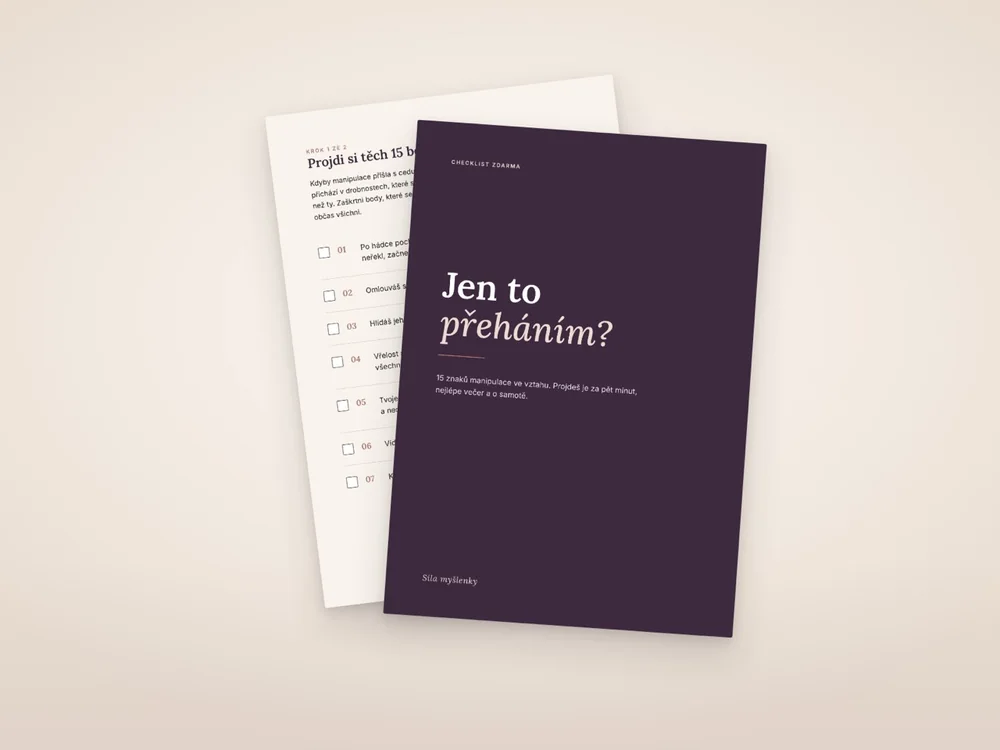
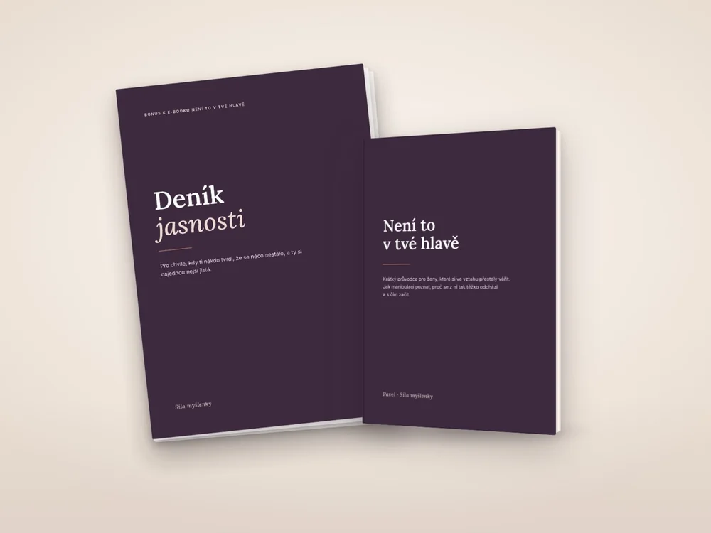

Některé rány nejsou vidět.
A přesto bolí.
Prostor pro vztahy, rozchody, zklamání a nový začátek. Protože někdy stačí jedna věta, aby člověk věděl, že v tom není sám.
Teď nemusíš nic vyřešit. Zpomal, nadechni se s koulí a pusť si klidný text na noc.

Checklist: 15 znaků manipulace ve vztahu
Projdeš ho za pět minut a poznáš, kdy už nejde jen o běžné neshody. Pošlu ti ho zdarma e-mailem.
Nemusíš hledat správná slova.
Vyber, co je ti teď nejblíž. Najdeš tu větu pro dnešek a text, který tě podrží.
Napiš to sem.
Místo do zprávy.
Všechno, co se ti teď honí hlavou a chce to ven. Až budeš mít dopsáno, pusť to. Nic se neukládá ani neodesílá. Slova se prostě rozplynou.
Pustit a přijmout konec, den po dni.
Nemusíš projít všechno najednou. Vrať se každý den k jednomu textu a pokračuj tam, kde právě jsi.
- Den 1Když vztah skončí
- Den 2Když rozum ví, ale tělo ne
- Den 3Když se ti nechce vůbec nic
- Den 4Co nemusíš hned vyřešit
- Den 5Když chceš napsat
- Den 6Když kontroluješ telefon
- Den 7Když zůstávají hezké vzpomínky
Průvodci, ke kterým se můžeš vracet.
Čtyři digitální materiály pro chvíle, kdy chceš mít myšlenky i malé kroky pohromadě.
Když se život zlomí
Síla myšlenky30 dní zpátky k sobě
Síla myšlenkyMlčky jsi to nesla
Síla myšlenky
Víc prostoru pro sebe
Úspora 258 KčČetl(a) jsi některého z průvodců? Napiš mi, jak ti pomohl →
Když se ti nechce číst, poslouchej.
Texty namluvené klidným hlasem. Na cestu domů, na procházku nebo do tmy, když nemůžeš usnout.
Čtení pro dny, kdy je toho moc.
Nový článek každý den v 9:00.
Prohlédnout všechny články →Když tě po rozchodu přepadne únava, která není lenost
Pro dny, kdy po rozchodu nezbývá energie skoro na nic.
Když pořád kontroluješ, jestli se ozval
Co se děje, když ruka automaticky sahá po telefonu, a jak si vytvořit malý odstup.
Jak poznat, že už nebojuješ za vztah, ale jen za jeho vzpomínku
Pět signálů, že je čas přestat se vracet tam, kde už ti není dobře.
První kroky zpět k sobě, když se ti nechce začínat znovu
Pro začátek stačí jeden malý krok, který patří tobě.
Ticho po konci není prázdno. Je to místo, kde znovu uslyšíš sebe.Přečíst dnešní větu